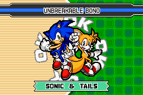

About Tails
Tails is a yellow-orange fox apart of the Sonic the Hedgehogline of games, aswell as Sonic's best friend!

Tails and sonic
Tails’ characteristics
- He is very smart
- He can be sarcastic
- He loves flying planes
- He learns what confidence truly means